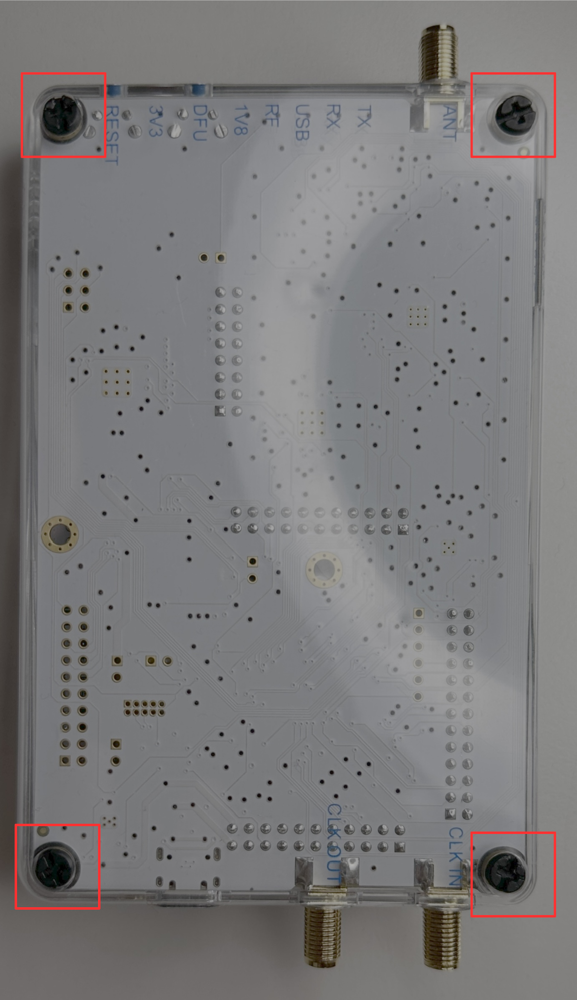
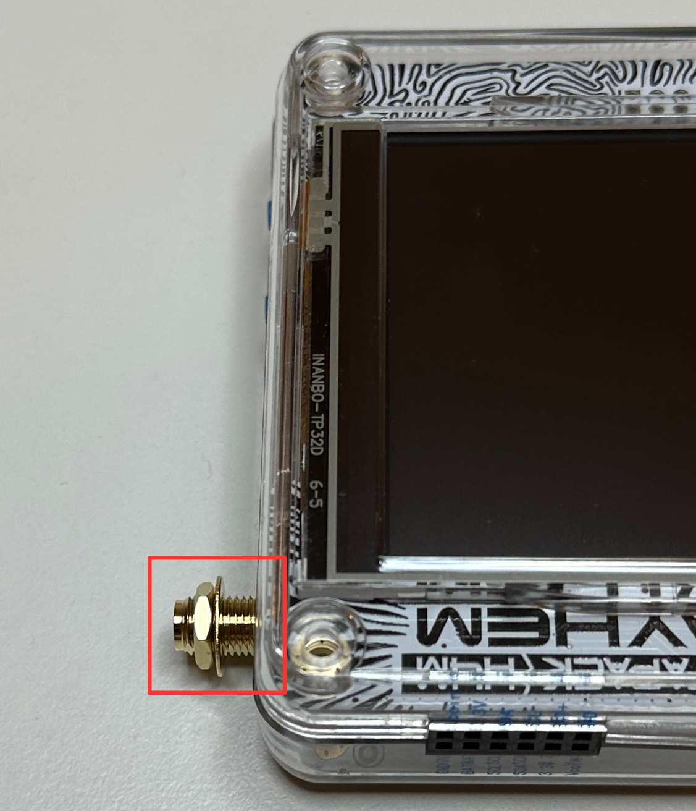
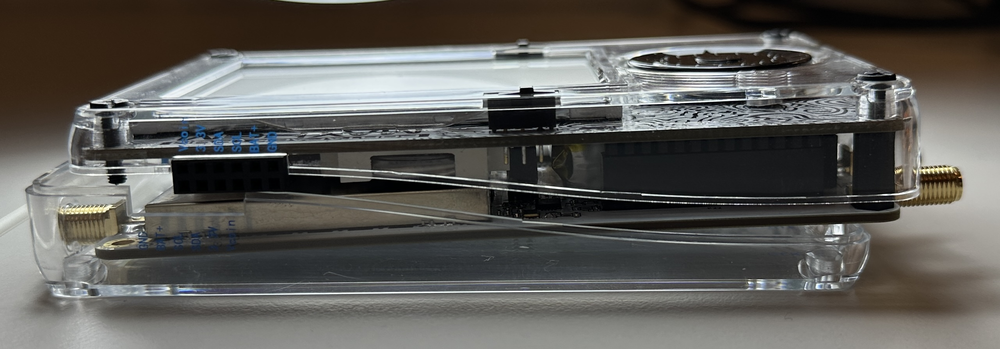
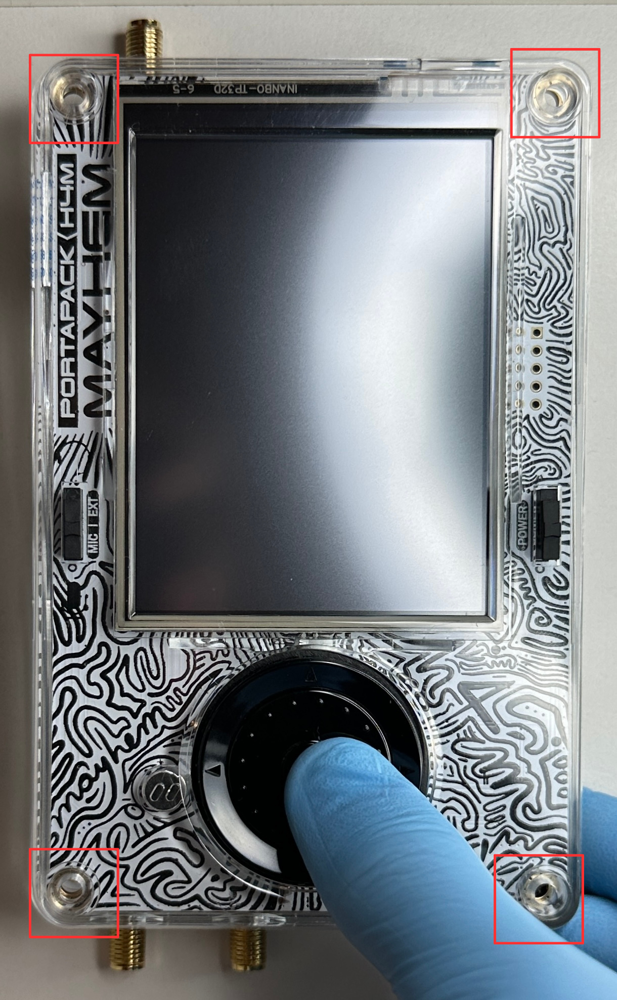
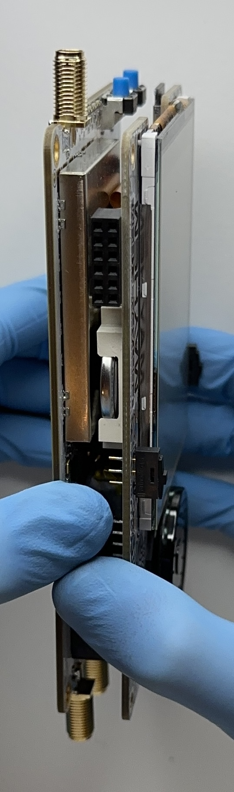
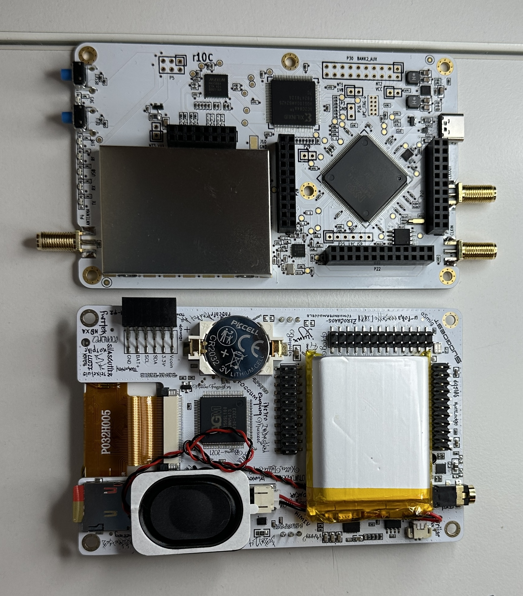

aroout
Disassembly Guide
To disassemble the H4M you need a Philips #1 screwdriver.
-
Place the device so that you can access the back side. Unscrew all the screws on the back.
 -
Using your fingers, unscrew the nuts from all the SMA ports. Then, take the rings off.
 -
Separate the top half of the device with the bottom shell. You can do this by tilting the bottom of the device up, then sliding it out vertically.
 -
Unscrew all the screws on the front, and then separate the top shell from the boards. You can do this by applying downwards pressure to the wheel and upwards pressure to the case.
 -
To separate the two boards, you must gently wiggle them on their sides while trying to move them away from each other. The pins will eventually be free. The standoffs between the boards can be removed. Regardless, they will fall out or their own.
 -
If you completed these steps carefully, the H4M and the HackRF will be separated. To assemble the H4M, perform these steps in reverse.
